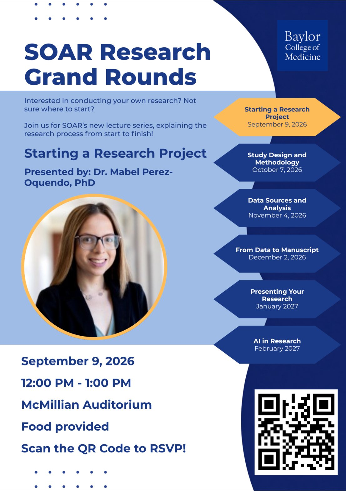

SOAR Research Grand Rounds: Data Sources and Analysis
Research
Some of these details were inferred from a vague announcement. Double-check with the organizer.
When
Wednesday, November 4 · Time TBD
Host
SOAR Office, Baylor College of Medicine · posted in BCM '30
Details
SOAR office lecture series on research for medical students with little or no research experience.
Announcement
BCM '30 · Aug 24
Hey everyone, congrats on finishing TTM! Now that you’re settling into the year, I wanted to share this with y’all since I know a lot of people have questions about research.
The SOAR office is kicking off Research Grand Rounds, a faculty lecture series on research for medical students, built especially for people who are curious about research but have little to no experience in the area.
Our first session, Starting a Research Project, is on September 9th from 12-1pm in McMillian. Food will be provided.
RSVP here or with the QR code: https://forms.gle/mjNHAPsjzje7g283A
We’ll collect questions in advance so the session can focus on your specific knowledge gaps, and there’ll be time for live Q&A at the end. Hope to see you there!